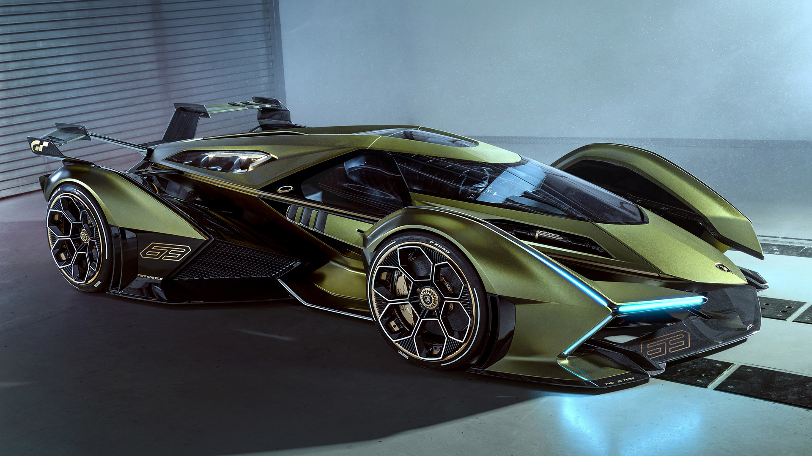
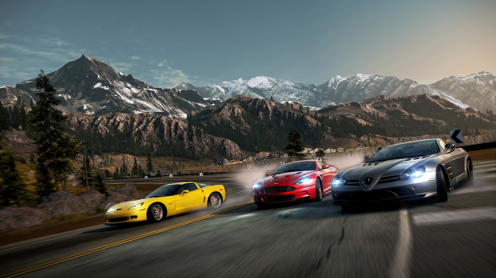
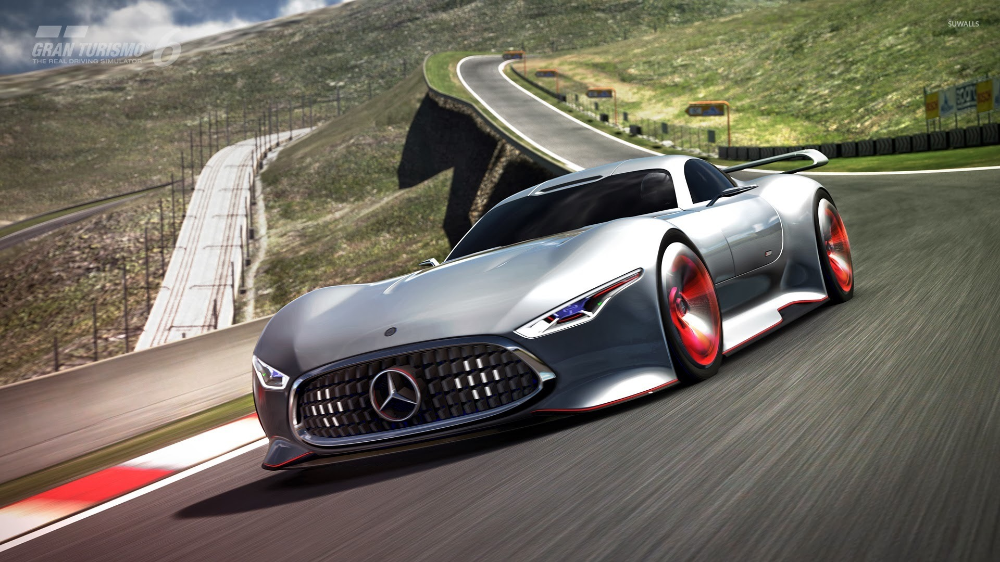

Racing games
Racing video games are a video game genre in which the player participates in a racing competition. They may be based on anything from real-world racing leagues to fantastical settings. They are distributed along a spectrum between simulations and simplified arcade-style racing games. Go-kart racing games emerged in the 1990s as a popular sub-genre of the latter. Racing games may also fall under the category of sports games.
In 2000, Angel Studios (now Rockstar San Diego) introduced the first free-roaming, or the former "free form", racing game on video game consoles and handheld game consoles with Midnight Club: Street Racing which released on the PlayStation 2 and Game Boy Advance. The game allowed the player to drive anywhere around virtual recreations of London and New York. Instead of using enclosed tracks for races, the game uses various checkpoints on the free roam map as the pathway of the race, giving the player the option to take various shortcuts or any other route to the checkpoints of the race. In 2001 Namco released Wangan Midnight to the arcade and later released an upgrade called Wangan Midnight R. Wangan Midnight R was also ported to the PlayStation 2 by Genki as just Wangan Midnight.
In 2000, Angel Studios (now Rockstar San Diego) introduced the first free-roaming, or the former "free form", racing game on video game consoles and handheld game consoles with Midnight Club: Street Racing which released on the PlayStation 2 and Game Boy Advance. The game allowed the player to drive anywhere around virtual recreations of London and New York. Instead of using enclosed tracks for races, the game uses various checkpoints on the free roam map as the pathway of the race, giving the player the option to take various shortcuts or any other route to the checkpoints of the race. In 2001 Namco released Wangan Midnight to the arcade and later released an upgrade called Wangan Midnight R. Wangan Midnight R was also ported to the PlayStation 2 by Genki as just Wangan Midnight.
Arcade-style racing
Arcade-style racing games put fun and a fast-paced experience above all else, as cars usually compete in unique ways. A key feature of arcade-style racers that specifically distinguishes them from simulation racers is their far more liberal physics. Whereas in real racing (and subsequently, the simulation equivalents) the driver must reduce their speed significantly to take most turns, arcade-style racing games generally encourage the player to "powerslide" the car to allow the player to keep up their speed by drifting through a turn. Collisions with other racers, track obstacles, or traffic vehicles is usually much more exaggerated than simulation racers as well. For the most part, arcade-style racers simply remove the precision and rigor required from the simulation experience and focus strictly on the racing element itself.
They often license real cars and leagues, but are equally open to more exotic settings and vehicles. Races take place on highways, windy roads, or in cities; they can be multiple-lap circuits or point-to-point sprints, with one or multiple paths sometimes with checkpoints, or other types of competition, like demolition derby, jumping, or testing driving skills. Popular arcade-style racers include the Need for Speed series, the Ridge Racer series, the Daytona USA series, the Sega Rally series, the Rush series, the Cruis'n series, the Midnight Club series, the Burnout series, the Out Run and MotorStorm series.
They often license real cars and leagues, but are equally open to more exotic settings and vehicles. Races take place on highways, windy roads, or in cities; they can be multiple-lap circuits or point-to-point sprints, with one or multiple paths sometimes with checkpoints, or other types of competition, like demolition derby, jumping, or testing driving skills. Popular arcade-style racers include the Need for Speed series, the Ridge Racer series, the Daytona USA series, the Sega Rally series, the Rush series, the Cruis'n series, the Midnight Club series, the Burnout series, the Out Run and MotorStorm series.

Simulation racing
Simulation style racing games strive to convincingly replicate the handling of an automobile. They often license real cars or racing leagues, but will sometimes use fantasy cars built to resemble real ones if unable to acquire an official license for them. Vehicular behavior physics are a key factor in the experience. The rigors of being a professional race driver are usually also included (such as having to deal with a car's tire condition and fuel level). Proper cornering technique and precision racing maneuvers (such as trail braking) are given priority in the simulation racing games.
Although these racing simulators are specifically built for people with a high grade of driving skill, it is not uncommon to find aids that can be enabled from the game menu. The most common aids are traction control (TC), anti-lock brakes (ABS), steering assistance, damage resistance, clutch assistance and automatic gear changes. Some of these racing simulators are customizable, as game fans have decoded the tracks, cars and executable files. Internet communities have grown around the simulators regarded as the most realistic and many websites host internet championships. Some of these racing simulators consist in Forza Motorsport, Gran Turismo, Assetto Corsa, Project Cars and many more.
Although these racing simulators are specifically built for people with a high grade of driving skill, it is not uncommon to find aids that can be enabled from the game menu. The most common aids are traction control (TC), anti-lock brakes (ABS), steering assistance, damage resistance, clutch assistance and automatic gear changes. Some of these racing simulators are customizable, as game fans have decoded the tracks, cars and executable files. Internet communities have grown around the simulators regarded as the most realistic and many websites host internet championships. Some of these racing simulators consist in Forza Motorsport, Gran Turismo, Assetto Corsa, Project Cars and many more.
